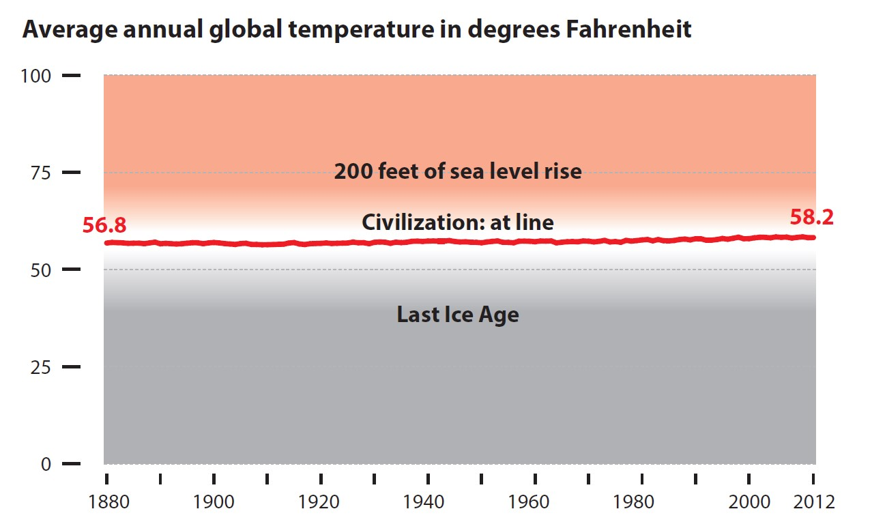
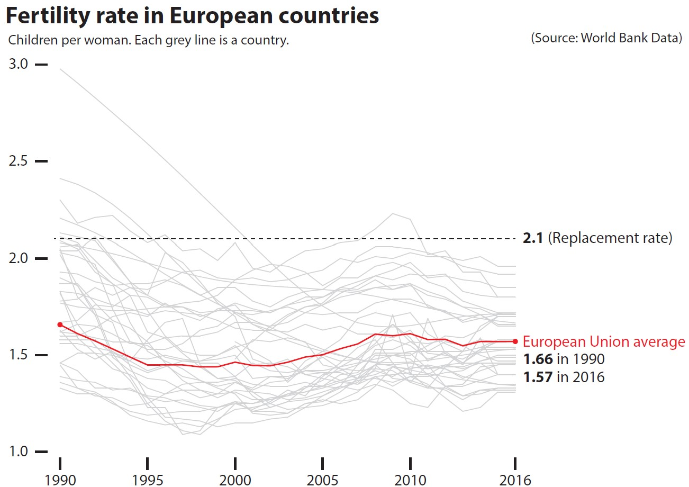

Lesson 6: Visualising and Analysing Time-Oriented Data
16 Feb 2023
Characteristics of time-series data
Not so friendly time-series data

Characteristics of time-series data
Not so friendly time-series data

Characteristics of time-series data
Not so friendly time-series data

A short visual history of time-series graphs
Playfair’s Commercial and Political Atlas (1786)

Reference: William Playfair’s trade-balance time-series chart, Commercial and Political Atlas, 1786.
A short visual history of time-series graphs
Playfair’s Chewing at One View Chart (1821)

Reference: William Playfair’s Price of Wheat
A short visual history of time-series graphs
Bump Chart shows rank of the most populous cities at each census: 1790-1890

- An interactive version here
Time-series graph that change public understading
The Hockey Stick Chart

Reference: Michael E. Mann, Raymond S. Bradley, Malcolm K. Hughes (1999) “Northern hemisphere temperatures during the past millennium: Inferences, uncertainties, and limitations”. Geophysical Research Letters, Vol. 26, No. pp. 759-762.
Time-series Patterns: Trend
- The overall or general direction of change in a series of time-series values is called the trend.

Time-series Patterns: Trend
- An upward trend.

Time-series Patterns: Trend
- A mixed trends.

Time-series Patterns: Variability
- The average degree of change from one point of time to the next throughout a particular span of time.

Time-series Patterns: Cycles
Cycles are patterns that repeat at regular intervals.
From the line graph, we can see that visitor arrivals from United Kingdom reach its peak on January and lowest on May every year.

Time-series Patterns: Exceptions
- Values that fall outside the norm.

This line graph show the significant impact of SAR on the visitor arrivals pattern to Singapore.
Line graph design tips
Not all line graphs should start at zero!


Line graph design tips
Multiple lines in a single graph is less effective than trellis line graph


Line graph design tips
Not all time-series graphs have time on the x-axis

Line graph design tips
Label line graph instead of using legend


Line graph design tips
Line chart with reference band
The reference used don’t have to confine a single line. A confidence interval or quantile range can be used too.

Beyond Line Graph
Control Chart: An analytical line chart
Control charts, also known as Shewhart charts (after Walter A. Shewhart) or process-behavior charts. They are a statistical process control tool used to determine if a manufacturing or business process is in a state of control. Beside the average line, there are two additional lines namely the upper control limit (UCL) and lower control limit (LCL). Any data points located beyond UCL or LCL will be flag out as anomalies.

Control chart in real world

Challenge I: Visualising Change between Two Points in Time
Bar chart method

Slopegraphs come to rescue!
Slopegraphs compare changes usually over time for a list of nouns located on an ordinal or interval scale.

Challenge II: Visualising cyclical patterns
Solution: Cycle plot

Reference: Intro to Cycle Plot
Challenge III: Massive Time-series Data
Classic line graph method

Challenge III: Massive Time-series Data
Solution: Horizon graph
By dividing an area chart into consecutive layers, horizon graphs present time-series data in a compact space while preserving resolution.

Reference: Time on the Horizon
The basic construct of a horizon graph
Figure on the right shows the process of constructing an horizon graph.
Reference: The Developmentof the Horizon Graph

Challenge IV: Distribution over time
Line graph method

Boxplot method
Alternative Time-series Data Visualisation methods: Calendar Heatmap
It is a 2-dimensional calendar view that shows a value over time through color coding it, often with warmer colors indicating higher values (hence heatmap).

Source: Calender heatmap
Visualising Change Over Time
Animated bubble plot (or motion chart)
A motion chart displays changes over time by showing movement within the two-dimensional space and changes in the size and color of the bubbles.